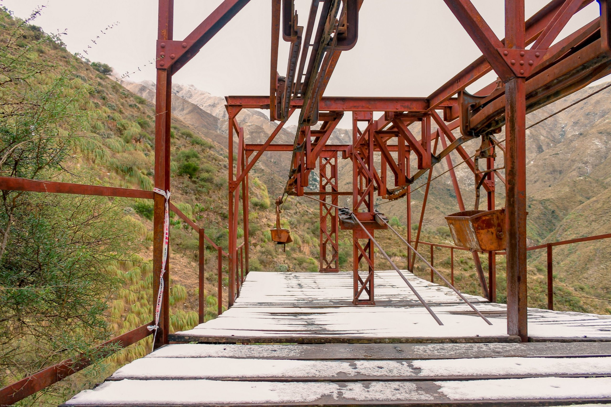

Chilecito nació el 19 de febrero de 1715 de la mano de Domingo de Castro y Bazán como Villa Santa Rita. Luego pasó a llamarse Villa Argentina y finalmente Chilecito (diminutivo de “Chiri” o “tierra roja” según los incas, o por la llegada masiva de chilenos a las minas a fines del siglo XIX).
Antes de los españoles ya existía un importante tambo incaico (Tambería del Inca), el más austral del imperio. En el siglo XX vivió su mayor esplendor con la minería de oro, plata y cobre en la Sierra de Famatina y la construcción del legendario Cable Carril La Mejicana (1903-1904), una obra de ingeniería única en Sudamérica.

El Cable Carril La Mejicana, ícono histórico de Chilecito
La cultura se vive en fiestas como la Chaya (febrero), con música folclórica, harina y albahaca, o en la tradición oral de leyendas mineras.